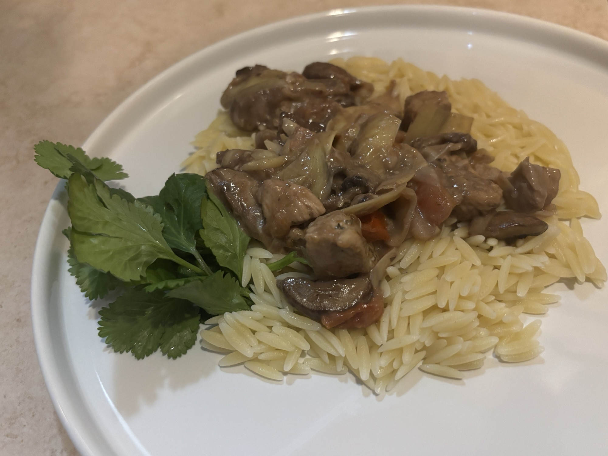
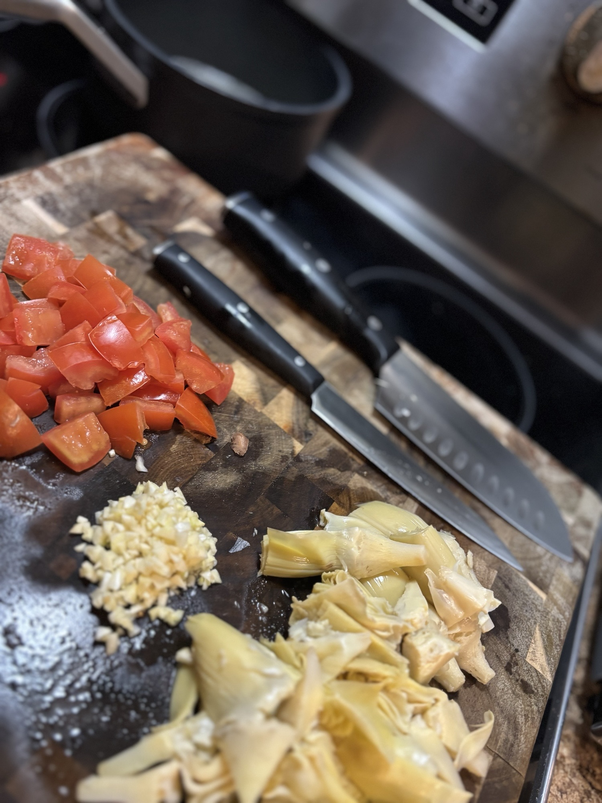
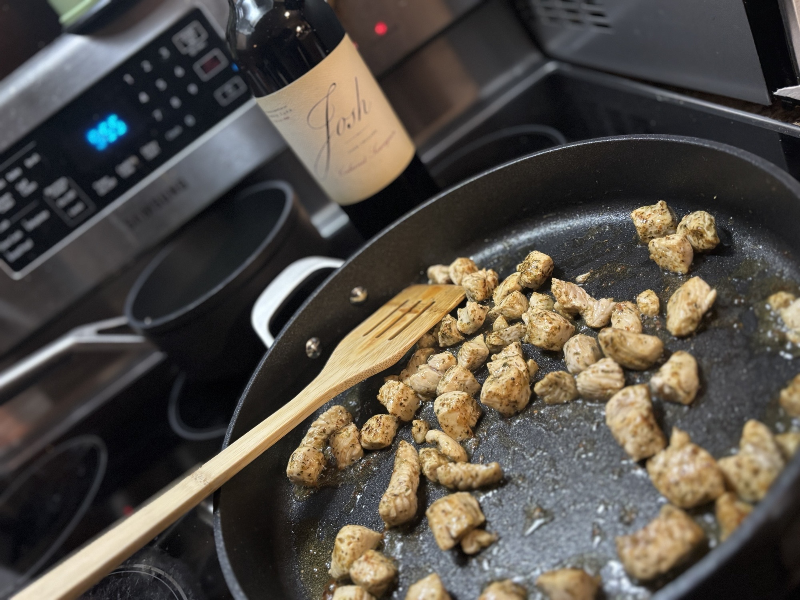
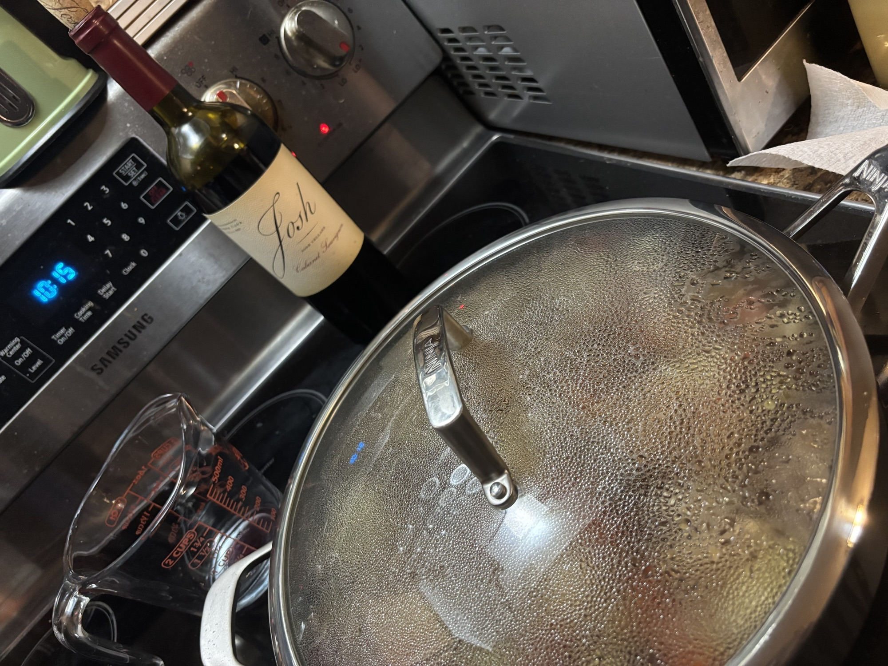
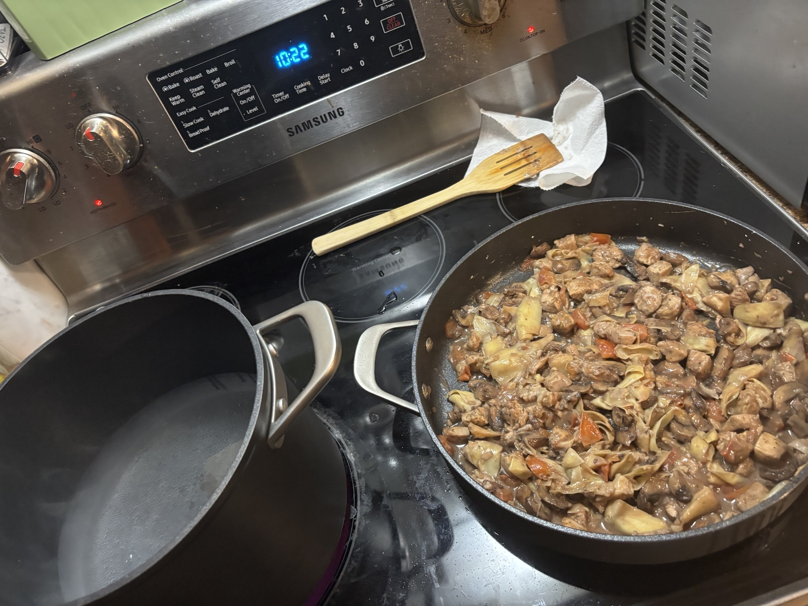

Chicken Rustico

This Chicken Rustico recipe, inspired by Italian cuisine, is easy and pretty quick!
Takes around 35 minutes.
Instructions
-
PREPARE all ingredients

-
HEAT 1 tbsp. oil in a large nonstick skillet over medium-high heat. Cook chicken for 5 minutes or until browned on both sides. Remove and set aside.

-
HEAT 1 tbsp. oil in the same skillet until hot. Add garlic and mushrooms. Sauté for 5 minutes or until mushrooms are tender. Stir in broth, wine, and mustard. Return chicken to skillet. Add tomatoes and artichoke hearts. Bring to a boil. Reduce heat to medium-low and cover. Cook for 10 minutes or until chicken is no longer pink in the center.

-
COMBINE cornstarch with 1 tbsp. cold water. Stir into the sauce. Heat to boiling. Cook, stirring, over high heat for about 1 minute or until sauce thickens. Serve with steamed zucchini or, if desired, cooked orzo pasta.
